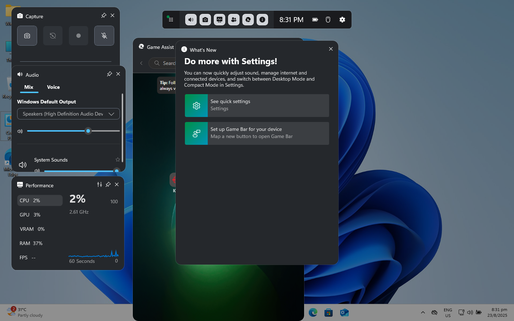
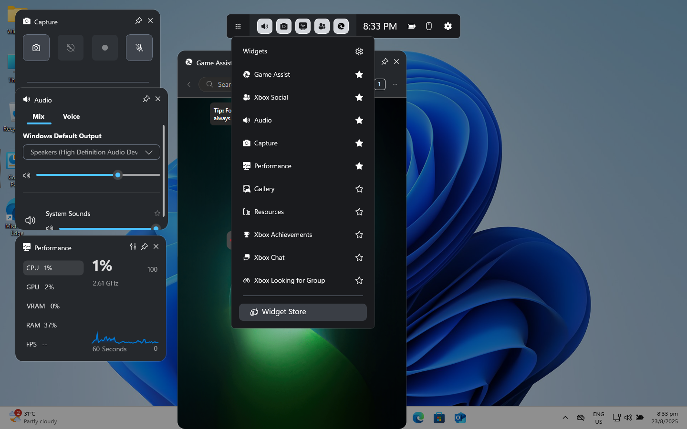
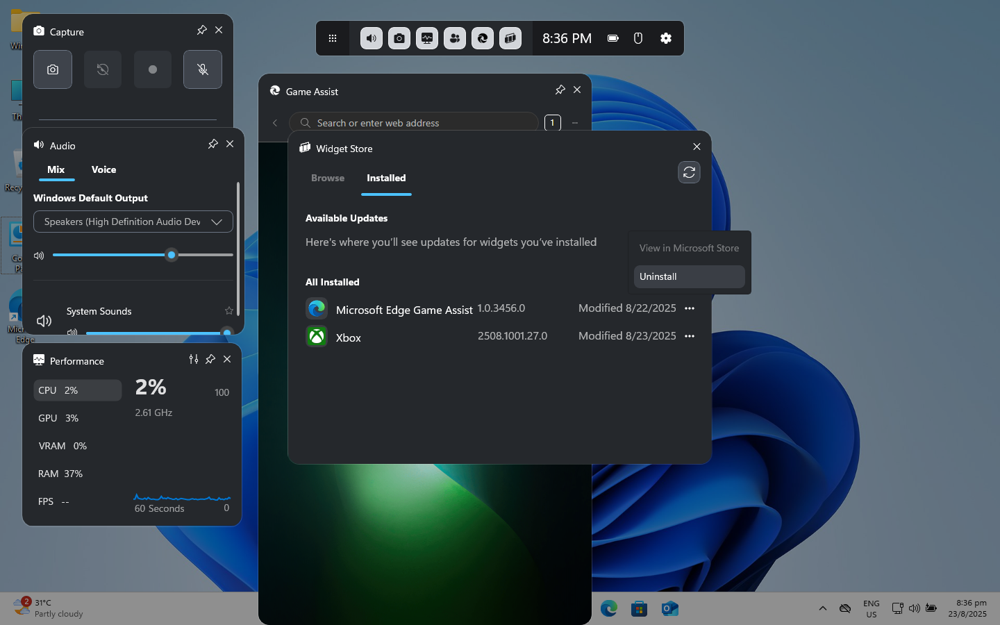
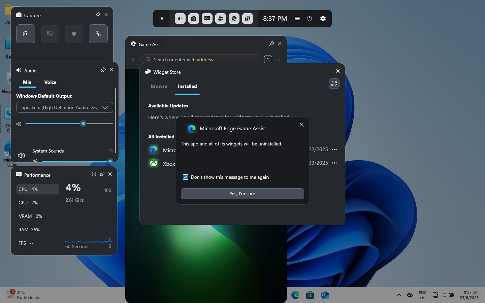
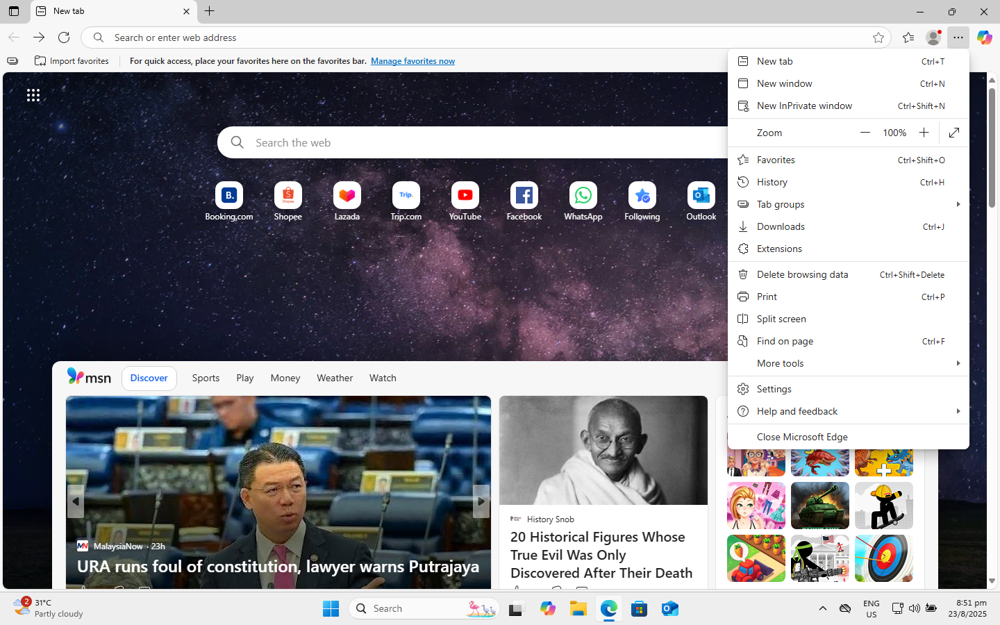
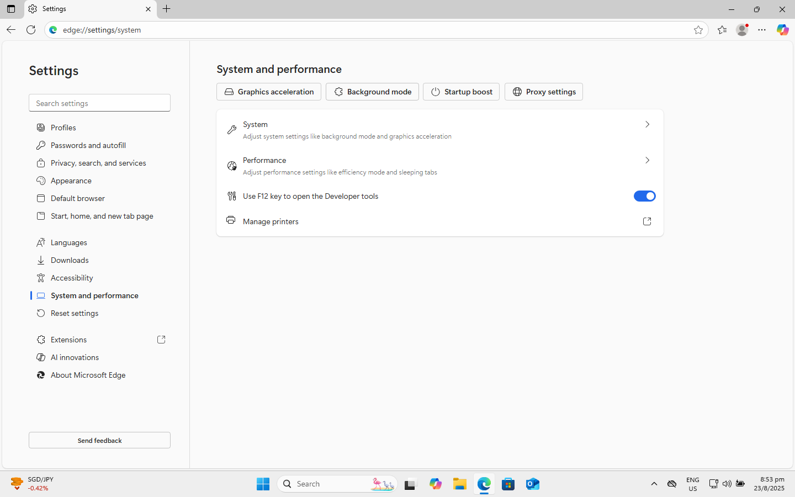
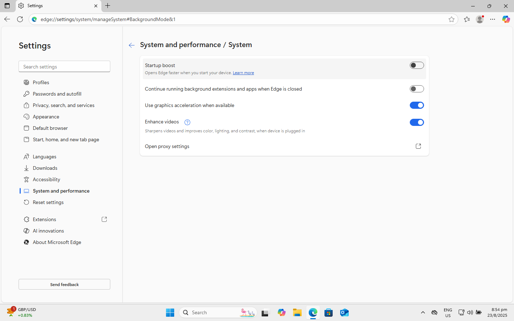
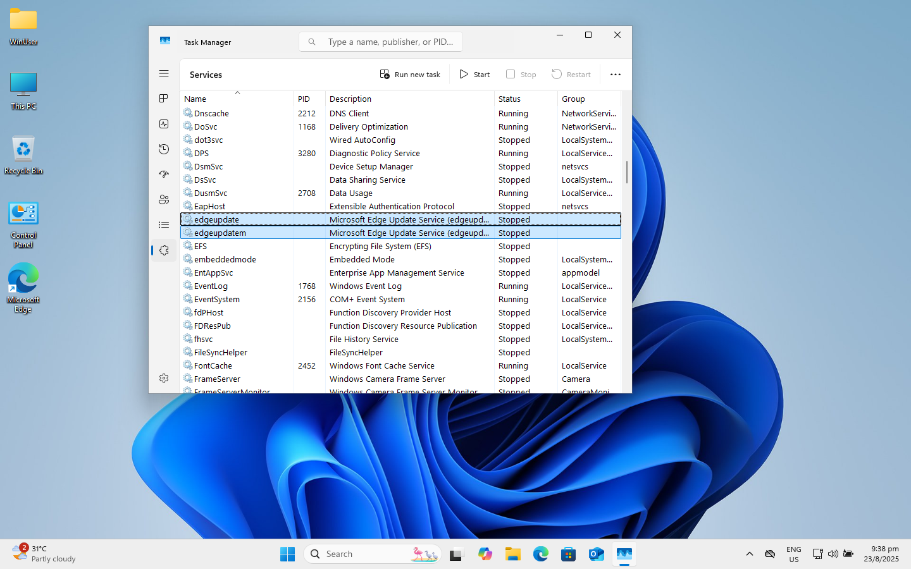
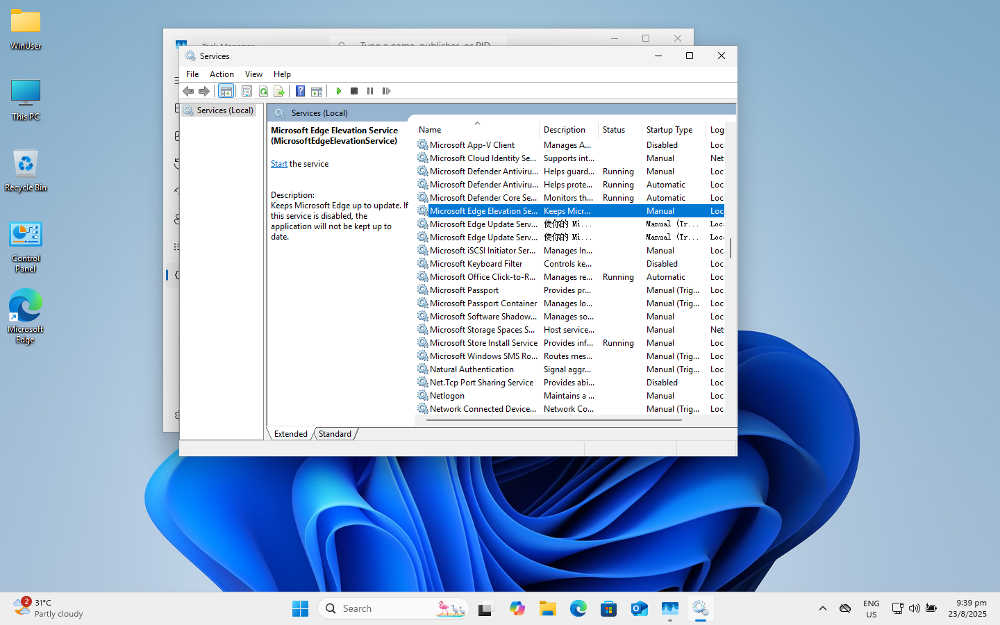
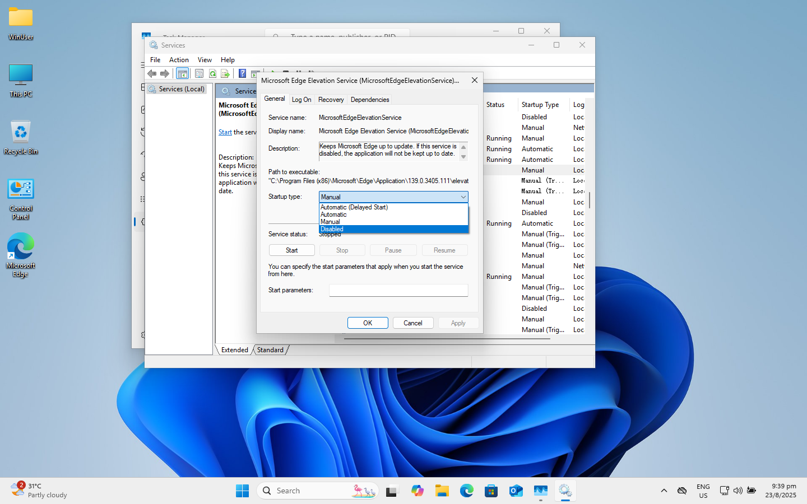

Microsoft Edge can sometimes be very annoying. Apart from its endless attempts to set itself as the default browser (those constant prompts when you search for Google Chrome, the way it binds most system services with it, and the fact that you can’t fully uninstall it — though thanks to EU regulations, at least we’re closer), it can also drain system resources. High memory usage, unnecessary background processes, and unwanted startup tasks are just a few examples.
So, if you happen to be one of the many people getting frustrated by it, you are not alone! In this post, I will show you a few simple steps to lower the resource cost of Microsoft Edge. With just a bit of tweaking, you can keep Edge around when you need it without letting it hog your system.
Uninstalling Game Assistant
The Game Assistant program of Microsoft Edge has been a nightmare for a lot of gamers. It automatically appears in the Game Bar, eats up resources, and for many people on working laptops or productivity machines, this is completely unnecessary. So how can we get rid of it?
First, press Win + G to open the Game Assistant.

Click on “Widget Menu“ (9 dots on the leftmost) and select “Widget Store“.

Then, select “Installed“ and navigate to “Microsoft Edge Game Assist“. After that, click on “More options“ (3 dots) and select “Uninstall“.

Finally, tick “Don’t show this message to me again“ and click on “Yes, I’m sure“ to uninstall it.

Now you’ve done with the first step!
Disable Background Mode
This is the main culprit behind Edge’s constant memory usage. Even if you never actively open Edge, it can still run processes in the background and slow down your system.
Now, we are going to deal with it.
Start Microsoft Edge and open settings menu by either click on “Settings and more“ (3 dots next to user avatar) or press Alt + F.

Navigate to “Settings“. On the left sidebar, click on “System and performance“, then look to the right for “Background mode“.

Here, disable both:
- “Startup boost“
- “Continue running background extensions and apps when Microsoft Edge is closed“

Now Edge will no longer silently eat resources when you’re not using it. You can compare the memory usage before and after — you’ll likely notice a significant difference.
Disable Edge Updates
The last step is to stop Microsoft Edge from updating itself constantly in the background. While updates can be useful, many users find the constant background services unnecessary, especially if Edge is not their main browser.
Press Ctrl + Shift + Esc or right click on the taskbar to open Task Manager.
Navigate to “Services“ and scroll down to “edgeupdate“ and “edgeupdatem“.

Right click on any of them and select “Open Services“ to open the service window.
In the “Services“ window, scroll down to (or search for) Microsoft Edge Update. You will see three services related to it:

For each of them:
- Right-click and select “Properties”.
- In the “Startup type” dropdown, set it to Manual or Disabled.
- Click “Apply” and then “OK”.

Repeat this for all three Edge update services.
Congratulations — now you’re done!
Conclusion
Microsoft Edge comes tightly integrated into Windows, but that doesn’t mean you have to let it drain your resources in the background. It’s OK if you have set your region outside EU during installation. By removing Game Assistant, disabling background processes and turning off the auto-update services, you can reduce Edge’s footprint significantly and reclaim performance for your games or work.
These tweaks don’t fully uninstall Edge (that’s still locked down on most systems), but they do help you take back control and keep your PC running smoothly.